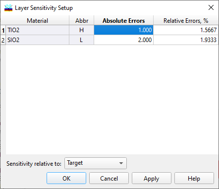

Layer Sensitivity Setup
Layer Sensitivity Setup
Navigation: OptiLayer Menu Commands > Analysis Menu > Layer Sensitivity >
Layer Sensitivity Setup
` <idh_worstcase_analysis.html>`__ ` <idh_menu_analysis.html>`__ ` <idh_layer_sensitivity_evaluati.html>`__

Layer Sensitivity Setup dialog allows you to choose the layer thickness variation values for each layer material used in the current design independently. Thickness variations can be expressed as either Relative Errors or Absolute Errors. The computation of Layer Sensitivities can be based on the variations of the current Target (conventional, Color, etc.) loaded into memory (Sensitivity relative to Target selected at the bottom of the dialog), or on the deviations of spectral characteristics from the theoretical ones. This corresponds to Sensitivity relative to Theoretical Design selection. In the case of Sensitivity relative to Theoretical Design selection, the spectral and angular grid, types of characteristics, and the rest of the target structure are taken from the loaded target file, but target values are replaced with computed characteristics of the initial theoretical design. This option can be considered as an intrinsic sensitivity study as opposed to sensitivity study with respect to the targets. The computational procedure consists of varying layer thicknesses one by one and estimating the obtained variations of the merit function (based on either Target or Theoretical Design):
ΔMFj = MF(d1, d2,…,dj+Δdj,…dN) - MF(d1, d2,…,dj,…dN)
After obtaining these values of ΔMFj they are scaled to the maximum ΔMFj and expressed as a percentage relative to this maximum deviation. Graphical and numerical representations can be observed in the Layer Sensitivity Evaluation window.